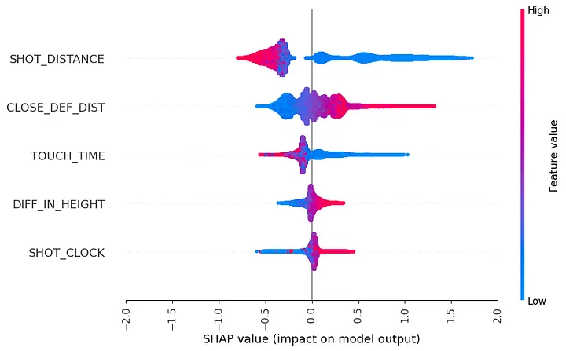
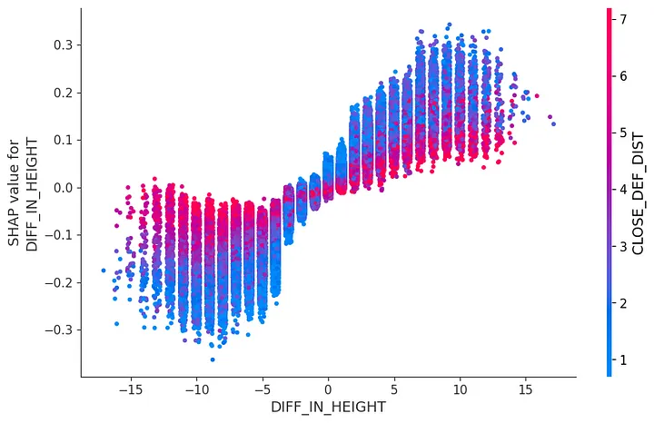
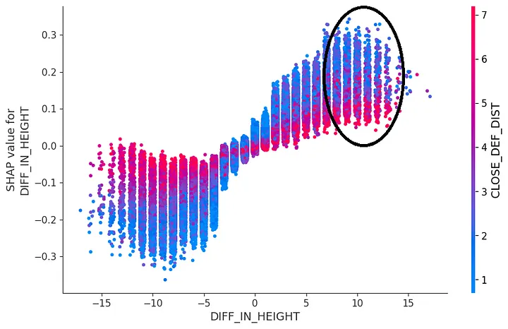
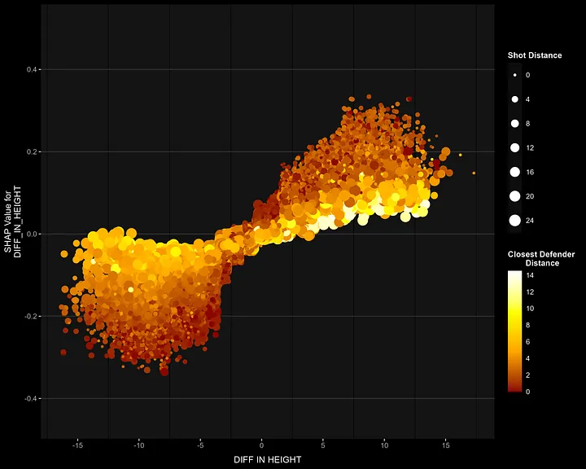

Some time ago, I had the chance to get my hands on some NBA data from 2013–14 and 2014–15 season. Back in the day SportsVu was the provider for the NBA data (it changed in 2017) and variables such as number of dribbles, touch time, closest defender, closest defender distance were available (these are not publicly accessible anymore). I wanted to leverage that data and attempt to create a new metric that captures players’ ability to shoot the ball better: Idea was to penalize misses that were likely to go in and reward makes that are less likely to go in while weighing 3 pointers as usual. I actually created something along these lines and called it shot proficiency which also takes shot volume into account. I may post about it later.
I decided to go with two separate models (we are looking at the one made for 2 pointers). I had an idea of how it would look like in certain metrics since I have taken a look at the literature before and was satisfied with the results. I wanted to know if what the model thinks is in line with my intuition of what makes shots more likely to go in so I started with SHAP summary plot.

If you haven’t seen this plot before, basically it tells how each variables’ values (indicated by the color, check the colorbar) effect the outcome (corresponding horizontal axis) for each observation (observations correspond to data points). For example, looking at the shot distance, the model lowered the prediction as the shot distance gets larger. Overall, it seems intuitive: Shots that are closer to the basket have higher prediction, as the defender distance decreases so does the prediction for that shot to go in etc. However, there are wide range of predictions for similar values of shot distance (specifically for shots that are close to the basket) and closest defender distance. In other words, the effect is not the same across the data. When an effect of a value on a prediction is not constant, next step is to investigate interactions: Does the effect get moderated by other variables? In other words, does the effect of one variable depends on the value of another variable?
SHAP offers methods to visualize both the main and interaction effects, an example can be found here. For this example, I had domain knowledge (I played organizational basketball for 10+ years) so I progressed with dependence plot.

Horizontal axis of the dependence plot represents the real values of diff_in_height while vertical axis corresponds to how it effects the prediction. So, without the color it gives you the main effect of the variable which is pretty intuitive: Higher height differences in favor of the defender lowers the probability of shots to go in.
However, there is something counterintuitive: Towards the very right side, you can see the predictions being lower for the shots when the defender is far away (and higher when the defender is close). That’s pretty counter-intuitive, I wouldn’t want a defender bothering me while shooting despite having height advantage. At this moment, domain knowledge kicks in.

- I suspected that to be moderated by a third variable, shot distance. Difference in height creates more advantage when the shooter is close to the basket and less so as one gets closer to the 3-pt line. This means the effect of height difference increases as the shot distance decreases.
- Another thing: There are a lot of shots where the difference in height is in favor of the defender (so, looking at the other end of the plot) and the closest defender distance is high. This might be due to defenders swapping who they defend after a play called pick & roll. I do not have play-by-play data that labels those so we are not going to be able to check them directly but indirectly: Switch on a pick & roll usually results in quick ball handler against a slow big guy relatively away from the basket, which forces big guy to take back a step or two to be able to stand in front of the ball handler. This gap creates relatively comfortable space for the ball handler to shoot, hence I suspect those shots to come from distance.

The plot aligns with both hypotheses:
- The model predicts a higher shot probability when height difference favors the shooter and the closest defender is nearby — these are shots close to the basket, confirming the first assumption.
- For shots where the defender is far away despite having a height advantage, the model predicts lower probabilities. While I can’t directly verify if these shots follow a pick & roll, the assumption led to the hypothesis that these shots come from longer distances — which is confirmed in the plot.
I like explainable AI methods to understand how the model makes predictions along with some validation: Does the model act in a way that I expect it to? Interactions are huge part of this process, many effects in the real world are not uniform across groups, so it’s something I am always interested in. If you’re like me, a good starting point might be this chapter from Lakens’ book.
Anyway, I hope you enjoyed the read. Have a nice Sunday!